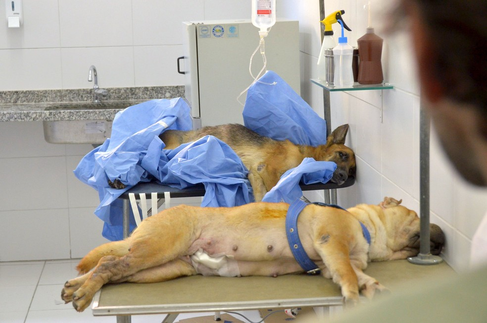

1. O que você precisa saber
A castração é uma das medidas mais importantes para controle populacional de cães e gatos. A cirurgia também ajuda a evitar diversos problemas de saúde, como os tumores de testículo, próstata e mamários. Alguns estudos apontam que fêmeas castradas antes do primeiro cio têm 90% menos de chances de desenvolver câncer de mama.
Os efeitos comportamentais da castração também são bastante importantes. Cães e gatos castrados tendem a ficar mais calmos, caseiros e menos agressivos. A cirurgia pode reduzir o hábito de fugir e de urinar pelos cantos.
2. Como é feita a castração de cães e gatos?
A técnica mais tradicional de castração dura cerca de 30 minutos. Envolve a retirada das gônadas dos animais, local das células produtoras de hormônios sexuais. Logo, a produção de hormônios nestas regiões também é interrompida.
Nos machos, tanto em cães quanto em gatos, a operação é menos invasiva. Consiste na retirada dos testículos – o que implica numa redução expressiva de testosterona. Já nas fêmeas – de ambas as espécies – é necessário realizar uma incisão no abdome para remoção do útero e dos ovários. O procedimento que reduz a produção de estrógeno e progesterona.
3. Quando fazer a castração?
Todos os cães e gatos podem ser castrados. No entanto, o período indicado para fazer a castração é bastante relativo. Depende, entre outros fatores, da maturação hormonal e do porte do Pet.
Em alguns casos, a castração pode ser feita ainda na fase de filhotes. Contudo, é interessante que o seu cão ou o gato já tenha tomado todas as vacinas. Este cuidado visa reduzir o risco de contaminação no ambiente hospitalar.
Buscar orientação do médico veterinário de confiança sobre o seu caso é a melhor estratégia.
4. Exames prévios à castração do animal
Seu animal merece ser tratado com todo respeito e atenção. Por isso, é necessário que, antes do procedimento, o médico veterinário avalie o seu pet através de exames de sangue e cardiológicos. Somente assim ele conhecerá as reais condições de saúde do paciente e poderá trabalhar com segurança.
5. Boas Práticas no Ambiente Cirúrgico: o fluxo controlado
A cirurgia de castração de animais não deve ser realizada em ambiente ambulatorial. Seu cão ou gato deve ser encaminhado para um ambiente hospitalar, com os profissionais e equipamentos necessários. O preparo para evitar riscos biológicos tanto para o pet quanto para os seres-humanos deve ser constante.
“Um bom centro cirúrgico tem como prioridade a questão da assepsia (limpeza). O fluxo controlado também é fundamental: o paciente deve ter um local específico para o preparo inicial. A equipe deve ter um local exclusivo para fazer a troca de roupas, por exemplo. Todos devem utilizar toucas e luvas adequadas. A sala de cirurgia deve ter fluxo controlado e possuir barreiras físicas para evitar a entrada de agentes contaminantes.”
6. O Pós-Cirúrgico da Castração de Cães e Gatos
A cicatrização da cirurgia de castração deve acontecer entre 7 e 10 dias após o procedimento. Um curativo especial é feito no local da incisão. Indica-se o uso de roupa própria e até mesmo de um colar elizabetano para evitar que o pet lamba ou arranque os pontos. É importante que o dono do Pet tenha estes itens em mãos quando for buscá-lo.
Normalmente, o animal retorna à rotina normal já no segundo dia pós-castração. Pede-se apenas para evitar grandes esforços e reduzir os passeios. Duas avaliações devem ser feitas durante a recuperação: uma após 3 dias e outra após 5 ou 7 dias, para a retirada do curativo.

O Pet pode ser medicado com antibiótico no dia operação. No entanto, nos centros que seguem todas as boas práticas no ambiente cirúrgico, o risco de infecções é bastante reduzido e o uso de antibióticos pode ser descartado, após o dia da cirurgia.
Alguns animais podem sentir incômodos, como sonolência, falta de apetite, incontinência urinária e até vômitos após a castração. Alguns medicamentos analgésicos pode ser um dos motivos. Caso os sintomas persistam, ou ocorra um aumento de volume drástico na região da cirurgia, o cirurgião que realizou a operação deverá ser procurado. O veterinário responsável deverá também receitar analgésicos e anti-inflamatórios para reduzir eventuais dores do seu Pet.